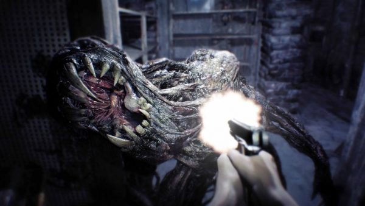

RESIDENT EVIL 7: BIOHAZARD
Here we are at the start of 2017 and we have a brand new Resident Evil game, that’s nothing like any of the games in the franchise prior. Not only is the game nothing like anything that came in the franchise before it, but it was also announced only 6 months prior to its release. No this isn’t an episode of the Twilight Zone, this is real life and Capcom finally seems to have their finger on the pulse of what fans want from some (definitely not all) of their franchises. I want to make it perfectly clear right upfront with this review, I will do my best to not spoil any aspects of the story. Resident Evil 7 is a game best enjoyed with little to no knowledge of the story or what happens in the game.
For my own experience, I did check out the Resident Evil 7 demo that came out immediately after it was revealed at e3 2016, and I also watched our own Benny Rose check out a small bite of the game in VR at NYCC. Outside of those two gameplay experiences, I stayed away from any online trailers, reviews, or further demo updates. I wanted to experience this game without having anything spoiled and that’s why I recommend you do the same.
For those that have been living locked in a mansion for the past 6 months, Resident Evil 7 reinvents the series and takes you into a first-person perspective. Now, did you notice I shied away from calling it a first-person shooter? Seeing where Capcom brought the franchise with RE5 and 6, it wouldn’t have been too surprising for them to make it a FPS and further kill the franchise. Instead they took the franchise first-person, brought it back to its survival horror roots and totally redeemed themselves. I’ll make this real simple, before I dive into anything about the game, Resident Evil 7 is fantastic. I was worried with the quick turn around from showing it at e3, to releasing it just 6 months later (I really thought we were going to have delay), and I can safely say all my worries were put to rest within the first hour.
Within that first hour of gameplay I experienced: tension, anxiety, what the f**k moments, and pure joy. This all made for a great start to Resident Evil 7 and it continued throughout. Homage’s to the previous games, returning items and other subtle nuances just add to what already is an amazing experience. This game could have even stood on its own without being a Resident Evil game, that’s how good it is. I feel like I haven't been this smitten with a video game in a long time. I’ve loved other games but it just feels different.
Other Reviews
NIOH

HORIZON ZERO DAWN

YAKUZA 0

DEUS EX